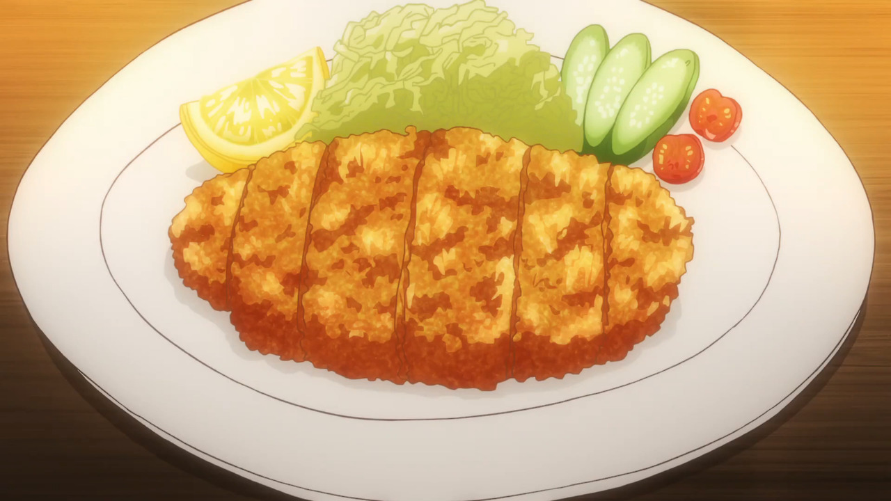

Tonkatsu

Tonkatsu is a dish consisting of breaded, deep-fried pork cutlets.
Ingredients
- Pork
- Salt and pepper
- Flour
- Egg
- Panko
- Neutral oil
- Tonkatsu Sauce
Steps
- Moisten panko
- Make slits on connective tissues of the pork
- Pound the pork
- Double fry
- Clean oil between batches and repeat